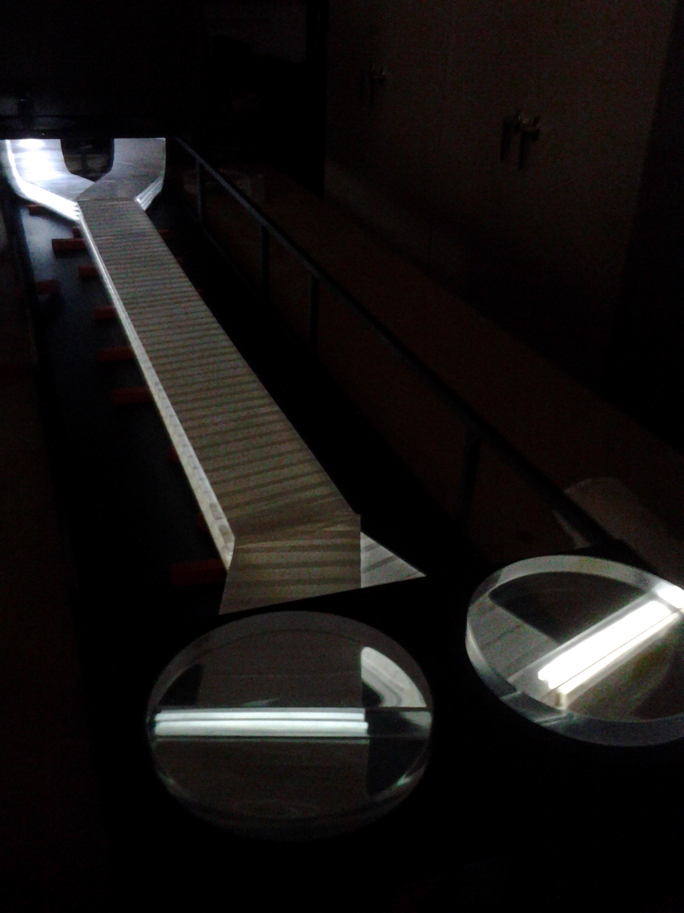

Greetings! I'm Zach, and I love digging into deep questions using data analysis techniques. I started out my career by getting a Ph.D. in Physics and applying my love of statistics and coding to the "deep problems of the universe." I've run experiements that studied how nuclei split apart to release energy (nuclear fission), what makes up a nucleus, and numerous other physics topics. All of these tasks shared two common themes: how do we get tons of data and what do we do with it once we have it? Solving these problems was the key to unlocking the answers to the puzzles of the universe. However, for me, what always mattered the most was problem solving through data techniques. So, yes, I've loved working with huge collaborations to study what happened in the first nanoseconds after the Big Bang... but I'm just as excited to use analysis techniques to predict what soup someone will eat based on their lifestyle! I'm fluent in C++, Python, and have a working knowledge of R, Java, FORTRAN, SPIN Microcontroller language, C#, and Javascript. I'm also a musician, a rock climber, and have a deep love of green chile.
For my undergraduate education, I attended Eastern Kentucky University getting a Bachelors of Science in Physics with minors in Mathematics and Spanish. One of the last projects I completed as an undergraduate was to write my Honor's Thesis on Cepheid variable stars. These are stars that have a fluctuating light intensity due to their chemical makeup, and that flucutating light pattern can be recorded and then used to determine how far away a star is from Earth. As part of this project, I setup and calibrated a brand new telescope and made the first measurements of light curves using the telescope. From there, I was hooked on experimentation and the idea that deep truths lie within data. To further my skillset, I applied to, and was accepted into, graduate school in physics. Over the next few years at the University of Kentucky, I received a number of accolades for my teaching and research including the "Outstanding Teaching Assitant" award at UK, presentations at the American Physical Society Meeting, and an invited talk at Los Alamos National Laboratory. I was also published multiple times in top peer-reviewed journals.
 For my PhD Dissertation, I built an experiment from the ground up. I started by building the detectors necessary to record the data (shown right). I also built the data acquisition interface (DAQ), which takes electrical pulses from the detectors and converts them to numbers we can use to categorize and study the detected particles. The DAQ work was particularly interesting, as it involved using USB interfaces to connect to machinery, and extract dozens of individual bits of encoded data. The data had to be converted to a human-readable format and stored in an intelligent way, as well as being displayed on the fly so that we could monitor the data as it was taken. Alongside this, it needed to have an accessible GUI and numerous other small features like the ability to set a timer, the ability to save the data incrementally, the ability to show correlations between data, and numerous other features.
Another portion of my work involved simulating detector responses to the particles to determine the efficiency of detecting a particle. Using these simulations, I could input a known number of particles with a known set of properties to see how many of those particles would be detected (as a function of the properties). This allows a full determination of the detector response matrix, which can then be used to correct the recorded data to tell us: "given that we saw X, the truth is Y."
 After completing my dissertation and earning my PhD, I joined the STAR Collaboration (me and the STAR Detector shown at left) by taking a postdoctoral research position at University of Illinois at Chicago (UIC). Working with this collaboration, I learned the principles of large-scale computing. I regularly worked with 10s or 100s of terabytes worth of data, all stored across myriad distributed-disks. I learned how to handle cluster-based computing and parallel-processing for large scale datasets. I also helped develop and maintain a method that allowed us to prune and trim the data from 60+TB down to a more managable 1 TB without losing the parts of the data that are interesting to us, which vastly increases our ability to sift through the physics held within.
After completing my dissertation and earning my PhD, I joined the STAR Collaboration (me and the STAR Detector shown at left) by taking a postdoctoral research position at University of Illinois at Chicago (UIC). Working with this collaboration, I learned the principles of large-scale computing. I regularly worked with 10s or 100s of terabytes worth of data, all stored across myriad distributed-disks. I learned how to handle cluster-based computing and parallel-processing for large scale datasets. I also helped develop and maintain a method that allowed us to prune and trim the data from 60+TB down to a more managable 1 TB without losing the parts of the data that are interesting to us, which vastly increases our ability to sift through the physics held within.At this point, I also took an interest in machine learning, after realizing how powerful the techniques could be if correctly applied. I began working on Python-based projects that incorporated machine learning with the goal of honing my skills of manipulating datasets with many features such that a machine learning techniques could be applied in order to predict outcomes based on real data. At present, I spend most of my days writing C++ code to solve long-standing questions about the makeup of the nucleus and most of my nights writing Python code to satisfy my curiosity about who will make the MLB Hall of Fame or how one might predict crime patterns in Chicago.